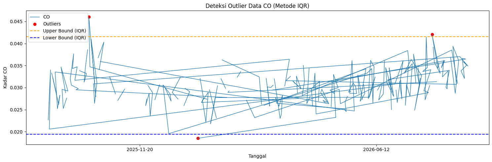
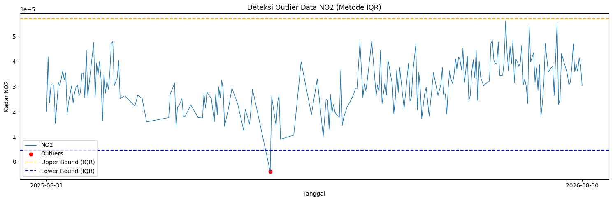
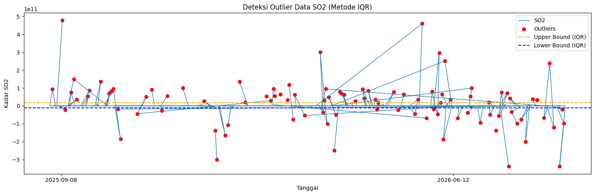
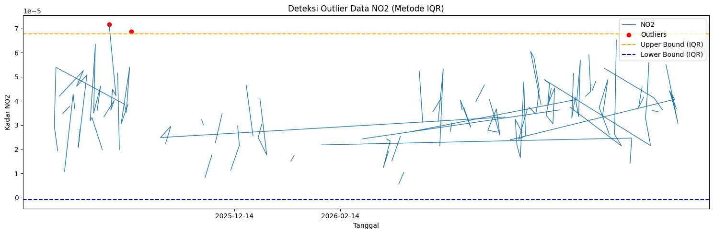
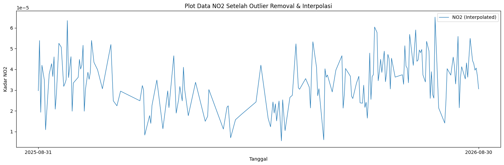

import openeo
connection = openeo.connect("openeo.dataspace.copernicus.eu").authenticate_oidc()
Authenticated using refresh token.
aoi = {
"type": "Polygon",
"coordinates": [
[
[
112.02157277712394,
-7.497613325561829
],
[
112.10184096886792,
-7.485099183607616
],
[
112.12308018904173,
-7.618997309201447
],
[
112.04281199730002,
-7.631507571342894
],
[
112.02157277712394,
-7.497613325561829
]
]
]
}
s5post = connection.load_collection(
"SENTINEL_5P_L2",
temporal_extent=["2025-08-31", "2026-08-31"],
spatial_extent={
"west": 112.02157277712394,
"south": -7.631507571342894,
"east": 112.12308018904173,
"north": -7.485099183607616
},
# Disesuaikan dengan data yang dibutuhkan
bands=["CO"],
)
# Agregasi harian agar tidak ada lebih dari satu data per hari
s5p_co_daily = s5post.aggregate_temporal_period(reducer="mean", period="day")
# Agregasi spasial untuk menghasilkan rata-rata time series per AOI
s5p_co_aoi = s5p_co_daily.aggregate_spatial(reducer="mean", geometries=aoi)
# Simpan hasil sebagai CSV
result = s5p_co_aoi.save_result(format="CSV")
# Jalankan job
job = result.create_job(title="s5p_co_timeseries")
job.start_and_wait()
# Download
job.get_results().download_files("output_co")
0:00:00 Job 'j-26101109160241e190b13f5fe460d230': send 'start'
0:00:02 Job 'j-26101109160241e190b13f5fe460d230': queued (progress 0%)
0:00:07 Job 'j-26101109160241e190b13f5fe460d230': queued (progress 0%)
0:00:13 Job 'j-26101109160241e190b13f5fe460d230': queued (progress 0%)
0:00:21 Job 'j-26101109160241e190b13f5fe460d230': queued (progress 0%)
import pandas as pd
# Baca hasil crawling CO dari folder output.
df_co = pd.read_csv("output_co/timeseries.csv", sep=",")
df_co = df_co[["date", "CO"]].copy()
df_co["date"] = pd.to_datetime(df_co["date"], errors="coerce")
df_co["CO"] = pd.to_numeric(df_co["CO"], errors="coerce")
df_co = df_co[
(df_co["date"] >= "2025-08-31")
& (df_co["date"] <= "2026-08-31")
].copy()
df_co["date"] = df_co["date"].dt.strftime("%Y-%m-%d")
df_co.to_csv("CO_Kertosono_timeseries.csv", index=False)
print("File berhasil dibuat: CO_Kertosono_timeseries.csv")
print("Ukuran data:", df_co.shape)
df_co.head()
File berhasil dibuat: CO_Kertosono_timeseries.csv
Ukuran data: (365, 2)
| date | CO | |
|---|---|---|
| 0 | 2025-11-20 | NaN |
| 1 | 2025-11-19 | NaN |
| 2 | 2025-11-17 | NaN |
| 3 | 2025-11-22 | NaN |
| 4 | 2025-11-23 | 0.032053 |
import pandas as pd
df = pd.read_csv("CO_Kertosono_timeseries.csv")
df.columns = ["date", "CO"]
df['date'] = pd.to_datetime(df['date'])
# Buat rentang tanggal lengkap
start_date = "2025-08-31"
end_date = "2026-08-31"
full_range = pd.date_range(start=start_date, end=end_date, freq='D')
# Cek tanggal yang hilang
missing_dates = full_range.difference(df['date'])
print(f"Jumlah hari missing: {len(missing_dates)}")
print("Daftar tanggal missing:")
print(missing_dates)
Jumlah hari missing: 1
Daftar tanggal missing:
DatetimeIndex(['2026-08-31'], dtype='datetime64[ns]', freq='D')
df = pd.read_csv("CO_Kertosono_timeseries.csv")
missing_value = df['CO'].isna().sum()
print(missing_value)
103
import pandas as pd
import numpy as np
import matplotlib.pyplot as plt
df = pd.read_csv("CO_Kertosono_timeseries.csv", sep=";")
df['date'] = pd.to_datetime(df['date'], dayfirst=True)
# Hitung IQR (Interquartile Range)
Q1 = df['CO'].quantile(0.25)
Q3 = df['CO'].quantile(0.75)
IQR = Q3 - Q1
lower_bound = Q1 - 1.5 * IQR
upper_bound = Q3 + 1.5 * IQR
# Filter outlier
outliers_iqr = df[(df['CO'] < lower_bound) | (df['CO'] > upper_bound)]
print("Jumlah Outlier (IQR):", len(outliers_iqr))
print(outliers_iqr[['date', 'CO']].head())
Jumlah Outlier (IQR): 3
date CO
55 2026-01-09 0.018492
323 2025-10-07 0.046069
344 2026-07-30 0.042046
# === Visualisasi ===
plt.figure(figsize=(15,5))
plt.plot(df['date'], df['CO'], label="CO", linewidth=1)
# Titik Outlier
plt.scatter(outliers_iqr['date'], outliers_iqr['CO'],
color='red', marker='o', label="Outliers")
# Garis batas atas & bawah
plt.axhline(upper_bound, color='orange', linestyle='dashed', label="Upper Bound (IQR)")
plt.axhline(lower_bound, color='blue', linestyle='dashed', label="Lower Bound (IQR)")
plt.title("Deteksi Outlier Data CO (Metode IQR)")
plt.xlabel("Tanggal")
plt.ylabel("Kadar CO")
plt.legend()
plt.tight_layout()
plt.xticks(
ticks=[df['date'].iloc[0], df['date'].iloc[-1]],
labels=[df['date'].iloc[0].strftime('%Y-%m-%d'),
df['date'].iloc[-1].strftime('%Y-%m-%d')]
)
plt.show()

aoi = {
"type": "Polygon",
"coordinates": [
[
[
112.02157277712394,
-7.497613325561829
],
[
112.10184096886792,
-7.485099183607616
],
[
112.12308018904173,
-7.618997309201447
],
[
112.04281199730002,
-7.631507571342894
],
[
112.02157277712394,
-7.497613325561829
]
]
]
}
s5post = connection.load_collection(
"SENTINEL_5P_L2",
temporal_extent=["2025-08-31", "2026-08-31"],
spatial_extent={
"west": 112.02157277712394,
"south": -7.631507571342894,
"east": 112.12308018904173,
"north": -7.485099183607616
},
# Disesuaikan dengan data yang dibutuhkan
bands=["NO2"],
)
# Agregasi harian agar tidak ada lebih dari satu data per hari
s5p_no2_daily = s5post.aggregate_temporal_period(reducer="mean", period="day")
# Agregasi spasial untuk menghasilkan rata-rata time series per AOI
s5p_no2_aoi = s5p_no2_daily.aggregate_spatial(reducer="mean", geometries=aoi)
# Simpan hasil sebagai CSV
result = s5p_no2_aoi.save_result(format="CSV")
# Jalankan job
job = result.create_job(title="s5p_no2_timeseries")
job.start_and_wait()
# Download
job.get_results().download_files("output_no2")
0:00:00 Job 'j-26091715403448c5bf4d3355018d26b1': send 'start'
0:00:04 Job 'j-26091715403448c5bf4d3355018d26b1': queued (progress 0%)
0:00:10 Job 'j-26091715403448c5bf4d3355018d26b1': queued (progress 0%)
0:00:16 Job 'j-26091715403448c5bf4d3355018d26b1': queued (progress 0%)
0:00:24 Job 'j-26091715403448c5bf4d3355018d26b1': queued (progress 0%)
0:00:34 Job 'j-26091715403448c5bf4d3355018d26b1': queued (progress 0%)
0:00:47 Job 'j-26091715403448c5bf4d3355018d26b1': queued (progress 0%)
0:01:03 Job 'j-26091715403448c5bf4d3355018d26b1': queued (progress 0%)
0:01:22 Job 'j-26091715403448c5bf4d3355018d26b1': queued (progress 0%)
0:01:46 Job 'j-26091715403448c5bf4d3355018d26b1': running (progress N/A)
0:02:16 Job 'j-26091715403448c5bf4d3355018d26b1': running (progress N/A)
0:02:54 Job 'j-26091715403448c5bf4d3355018d26b1': running (progress N/A)
0:03:41 Job 'j-26091715403448c5bf4d3355018d26b1': running (progress N/A)
0:04:39 Job 'j-26091715403448c5bf4d3355018d26b1': finished (progress 100%)
[WindowsPath('output_no2/timeseries.csv'),
WindowsPath('output_no2/job-results.json')]
import pandas as pd
# Baca hasil crawling NO2 dari folder output.
df_no2 = pd.read_csv("output_no2/timeseries.csv", sep=",")
df_no2 = df_no2[["date", "NO2"]].copy()
df_no2["date"] = pd.to_datetime(df_no2["date"], errors="coerce")
df_no2["NO2"] = pd.to_numeric(df_no2["NO2"], errors="coerce")
df_no2 = df_no2[
(df_no2["date"] >= "2025-08-31")
& (df_no2["date"] <= "2026-08-31")
].copy()
df_no2["date"] = df_no2["date"].dt.strftime("%Y-%m-%d")
df_no2.to_csv("NO2_Kertosono_timeseries.csv", index=False)
print("File berhasil dibuat: NO2_Kertosono_timeseries.csv")
print("Ukuran data:", df_no2.shape)
df_no2.head()
File berhasil dibuat: NO2_Kertosono_timeseries.csv
Ukuran data: (365, 2)
| date | NO2 | |
|---|---|---|
| 0 | 2026-01-03 | NaN |
| 1 | 2026-01-04 | 0.000029 |
| 2 | 2026-01-06 | NaN |
| 3 | 2026-01-10 | NaN |
| 4 | 2026-01-07 | NaN |
import pandas as pd
df = pd.read_csv("NO2_Kertosono_timeseries.csv")
df.columns = ["date", "NO2"]
df['date'] = pd.to_datetime(df['date'])
# Buat rentang tanggal lengkap
start_date = "2025-08-31"
end_date = "2026-08-31"
full_range = pd.date_range(start=start_date, end=end_date, freq='D')
# Cek tanggal yang hilang
missing_dates = full_range.difference(df['date'])
print(f"Jumlah hari missing: {len(missing_dates)}")
print("Daftar tanggal missing:")
print(missing_dates)
Jumlah hari missing: 1
Daftar tanggal missing:
DatetimeIndex(['2026-08-31'], dtype='datetime64[ns]', freq='D')
df = pd.read_csv("NO2_Kertosono_timeseries.csv")
missing_value = df['NO2'].isna().sum()
print(missing_value)
135
import pandas as pd
import numpy as np
import matplotlib.pyplot as plt
df = pd.read_csv("SO2_Kertosono_timeseries.csv")
df['date'] = pd.to_datetime(df['date'])
# Hitung IQR (Interquartile Range)
Q1 = df['SO2'].quantile(0.25)
Q3 = df['SO2'].quantile(0.75)
IQR = Q3 - Q1
lower_bound = Q1 - 1.5 * IQR
upper_bound = Q3 + 1.5 * IQR
# Filter outlier
outliers_iqr = df[(df['SO2'] < lower_bound) | (df['SO2'] > upper_bound)]
print("Jumlah Outlier (IQR):", len(outliers_iqr))
print(outliers_iqr[['date', 'SO2']].head())
---------------------------------------------------------------------------
ParserError Traceback (most recent call last)
Cell In[22], line 5
2 import numpy as np
3 import matplotlib.pyplot as plt
----> 5 df = pd.read_csv("SO2_Kertosono_timeseries.csv")
6 df['date'] = pd.to_datetime(df['date'])
8 # Hitung IQR (Interquartile Range)
File c:\Users\hp\AppData\Local\Programs\Python\Python312\Lib\site-packages\pandas\io\parsers\readers.py:1026, in read_csv(filepath_or_buffer, sep, delimiter, header, names, index_col, usecols, dtype, engine, converters, true_values, false_values, skipinitialspace, skiprows, skipfooter, nrows, na_values, keep_default_na, na_filter, verbose, skip_blank_lines, parse_dates, infer_datetime_format, keep_date_col, date_parser, date_format, dayfirst, cache_dates, iterator, chunksize, compression, thousands, decimal, lineterminator, quotechar, quoting, doublequote, escapechar, comment, encoding, encoding_errors, dialect, on_bad_lines, delim_whitespace, low_memory, memory_map, float_precision, storage_options, dtype_backend)
1013 kwds_defaults = _refine_defaults_read(
1014 dialect,
1015 delimiter,
(...) 1022 dtype_backend=dtype_backend,
1023 )
1024 kwds.update(kwds_defaults)
-> 1026 return _read(filepath_or_buffer, kwds)
File c:\Users\hp\AppData\Local\Programs\Python\Python312\Lib\site-packages\pandas\io\parsers\readers.py:626, in _read(filepath_or_buffer, kwds)
623 return parser
625 with parser:
--> 626 return parser.read(nrows)
File c:\Users\hp\AppData\Local\Programs\Python\Python312\Lib\site-packages\pandas\io\parsers\readers.py:1923, in TextFileReader.read(self, nrows)
1916 nrows = validate_integer("nrows", nrows)
1917 try:
1918 # error: "ParserBase" has no attribute "read"
1919 (
1920 index,
1921 columns,
1922 col_dict,
-> 1923 ) = self._engine.read( # type: ignore[attr-defined]
1924 nrows
1925 )
1926 except Exception:
1927 self.close()
File c:\Users\hp\AppData\Local\Programs\Python\Python312\Lib\site-packages\pandas\io\parsers\c_parser_wrapper.py:234, in CParserWrapper.read(self, nrows)
232 try:
233 if self.low_memory:
--> 234 chunks = self._reader.read_low_memory(nrows)
235 # destructive to chunks
236 data = _concatenate_chunks(chunks)
File pandas/_libs/parsers.pyx:838, in pandas._libs.parsers.TextReader.read_low_memory()
File pandas/_libs/parsers.pyx:905, in pandas._libs.parsers.TextReader._read_rows()
File pandas/_libs/parsers.pyx:874, in pandas._libs.parsers.TextReader._tokenize_rows()
File pandas/_libs/parsers.pyx:891, in pandas._libs.parsers.TextReader._check_tokenize_status()
File pandas/_libs/parsers.pyx:2061, in pandas._libs.parsers.raise_parser_error()
ParserError: Error tokenizing data. C error: Expected 1 fields in line 8, saw 2
# === Visualisasi ===
plt.figure(figsize=(15,5))
plt.plot(df['date'], df['NO2'], label="NO2", linewidth=1)
# Titik Outlier
plt.scatter(outliers_iqr['date'], outliers_iqr['NO2'],
color='red', marker='o', label="Outliers")
# Garis batas atas & bawah
plt.axhline(upper_bound, color='orange', linestyle='dashed', label="Upper Bound (IQR)")
plt.axhline(lower_bound, color='blue', linestyle='dashed', label="Lower Bound (IQR)")
plt.title("Deteksi Outlier Data NO2 (Metode IQR)")
plt.xlabel("Tanggal")
plt.ylabel("Kadar NO2")
plt.legend()
plt.tight_layout()
plt.xticks(
ticks=[df['date'].iloc[0], df['date'].iloc[-1]],
labels=[df['date'].iloc[0].strftime('%Y-%m-%d'),
df['date'].iloc[-1].strftime('%Y-%m-%d')]
)
plt.show()

aoi = {
"type": "Polygon",
"coordinates": [
[
[
112.02157277712394,
-7.497613325561829
],
[
112.10184096886792,
-7.485099183607616
],
[
112.12308018904173,
-7.618997309201447
],
[
112.04281199730002,
-7.631507571342894
],
[
112.02157277712394,
-7.497613325561829
]
]
]
}
s5post = connection.load_collection(
"SENTINEL_5P_L2",
temporal_extent=["2025-08-31", "2026-08-31"],
spatial_extent={
"west": 112.02157277712394,
"south": -7.631507571342894,
"east": 112.12308018904173,
"north": -7.485099183607616
},
# Disesuaikan dengan data yang dibutuhkan
bands=["SO2"],
)
# Agregasi harian agar tidak ada lebih dari satu data per hari
s5p_so2_daily = s5post.aggregate_temporal_period(reducer="mean", period="day")
# Agregasi spasial untuk menghasilkan rata-rata time series per AOI
s5p_so2_aoi = s5p_so2_daily.aggregate_spatial(reducer="mean", geometries=aoi)
# Simpan hasil sebagai CSV
result = s5p_so2_aoi.save_result(format="CSV")
# Jalankan job
job = result.create_job(title="s5p_so2_timeseries")
job.start_and_wait()
# Download
job.get_results().download_files("output_so2")
0:00:00 Job 'j-2609171546234437ad543da7f122e0b7': send 'start'
0:00:04 Job 'j-2609171546234437ad543da7f122e0b7': queued (progress 0%)
0:00:10 Job 'j-2609171546234437ad543da7f122e0b7': queued (progress 0%)
0:00:16 Job 'j-2609171546234437ad543da7f122e0b7': queued (progress 0%)
0:00:24 Job 'j-2609171546234437ad543da7f122e0b7': queued (progress 0%)
0:00:35 Job 'j-2609171546234437ad543da7f122e0b7': running (progress N/A)
0:00:47 Job 'j-2609171546234437ad543da7f122e0b7': running (progress N/A)
0:01:03 Job 'j-2609171546234437ad543da7f122e0b7': running (progress N/A)
0:01:22 Job 'j-2609171546234437ad543da7f122e0b7': running (progress N/A)
0:01:46 Job 'j-2609171546234437ad543da7f122e0b7': running (progress N/A)
0:02:16 Job 'j-2609171546234437ad543da7f122e0b7': running (progress N/A)
0:02:54 Job 'j-2609171546234437ad543da7f122e0b7': running (progress N/A)
0:03:41 Job 'j-2609171546234437ad543da7f122e0b7': running (progress N/A)
0:04:40 Job 'j-2609171546234437ad543da7f122e0b7': finished (progress 100%)
[WindowsPath('output_so2/timeseries.csv'),
WindowsPath('output_so2/job-results.json')]
import pandas as pd
# Baca hasil crawling SO2 dari folder output.
df_no2 = pd.read_csv("output_so2/timeseries.csv", sep=",")
df_no2 = df_no2[["date", "SO2"]].copy()
df_no2["date"] = pd.to_datetime(df_no2["date"], errors="coerce")
df_no2["SO2"] = pd.to_numeric(df_no2["SO2"], errors="coerce")
df_no2 = df_no2[
(df_no2["date"] >= "2025-08-31")
& (df_no2["date"] <= "2026-08-31")
].copy()
df_no2["date"] = df_no2["date"].dt.strftime("%Y-%m-%d")
df_no2.to_csv("SO2_Kertosono_timeseries.csv", index=False)
print("File berhasil dibuat: SO2_Kertosono_timeseries.csv")
print("Ukuran data:", df_no2.shape)
df_no2.head()
File berhasil dibuat: SO2_Kertosono_timeseries.csv
Ukuran data: (365, 2)
| date | SO2 | |
|---|---|---|
| 0 | 2025-09-08 | -0.000006 |
| 1 | 2025-09-10 | 0.000137 |
| 2 | 2025-09-12 | 0.000141 |
| 3 | 2025-09-11 | -0.000021 |
| 4 | 2025-09-06 | 0.000241 |
import pandas as pd
df = pd.read_csv("SO2_Kertosono_timeseries.csv")
df.columns = ["date", "SO2"]
df['date'] = pd.to_datetime(df['date'])
# Buat rentang tanggal lengkap
start_date = "2025-08-31"
end_date = "2026-08-31"
full_range = pd.date_range(start=start_date, end=end_date, freq='D')
# Cek tanggal yang hilang
missing_dates = full_range.difference(df['date'])
print(f"Jumlah hari missing: {len(missing_dates)}")
print("Daftar tanggal missing:")
print(missing_dates)
Jumlah hari missing: 1
Daftar tanggal missing:
DatetimeIndex(['2026-08-31'], dtype='datetime64[ns]', freq='D')
df = pd.read_csv("SO2_Kertosono_timeseries.csv")
missing_value = df['SO2'].isna().sum()
print(missing_value)
---------------------------------------------------------------------------
ParserError Traceback (most recent call last)
Cell In[24], line 1
----> 1 df = pd.read_csv("SO2_Kertosono_timeseries.csv")
2 missing_value = df['SO2'].isna().sum()
3 print(missing_value)
File c:\Users\hp\AppData\Local\Programs\Python\Python312\Lib\site-packages\pandas\io\parsers\readers.py:1026, in read_csv(filepath_or_buffer, sep, delimiter, header, names, index_col, usecols, dtype, engine, converters, true_values, false_values, skipinitialspace, skiprows, skipfooter, nrows, na_values, keep_default_na, na_filter, verbose, skip_blank_lines, parse_dates, infer_datetime_format, keep_date_col, date_parser, date_format, dayfirst, cache_dates, iterator, chunksize, compression, thousands, decimal, lineterminator, quotechar, quoting, doublequote, escapechar, comment, encoding, encoding_errors, dialect, on_bad_lines, delim_whitespace, low_memory, memory_map, float_precision, storage_options, dtype_backend)
1013 kwds_defaults = _refine_defaults_read(
1014 dialect,
1015 delimiter,
(...) 1022 dtype_backend=dtype_backend,
1023 )
1024 kwds.update(kwds_defaults)
-> 1026 return _read(filepath_or_buffer, kwds)
File c:\Users\hp\AppData\Local\Programs\Python\Python312\Lib\site-packages\pandas\io\parsers\readers.py:626, in _read(filepath_or_buffer, kwds)
623 return parser
625 with parser:
--> 626 return parser.read(nrows)
File c:\Users\hp\AppData\Local\Programs\Python\Python312\Lib\site-packages\pandas\io\parsers\readers.py:1923, in TextFileReader.read(self, nrows)
1916 nrows = validate_integer("nrows", nrows)
1917 try:
1918 # error: "ParserBase" has no attribute "read"
1919 (
1920 index,
1921 columns,
1922 col_dict,
-> 1923 ) = self._engine.read( # type: ignore[attr-defined]
1924 nrows
1925 )
1926 except Exception:
1927 self.close()
File c:\Users\hp\AppData\Local\Programs\Python\Python312\Lib\site-packages\pandas\io\parsers\c_parser_wrapper.py:234, in CParserWrapper.read(self, nrows)
232 try:
233 if self.low_memory:
--> 234 chunks = self._reader.read_low_memory(nrows)
235 # destructive to chunks
236 data = _concatenate_chunks(chunks)
File pandas/_libs/parsers.pyx:838, in pandas._libs.parsers.TextReader.read_low_memory()
File pandas/_libs/parsers.pyx:905, in pandas._libs.parsers.TextReader._read_rows()
File pandas/_libs/parsers.pyx:874, in pandas._libs.parsers.TextReader._tokenize_rows()
File pandas/_libs/parsers.pyx:891, in pandas._libs.parsers.TextReader._check_tokenize_status()
File pandas/_libs/parsers.pyx:2061, in pandas._libs.parsers.raise_parser_error()
ParserError: Error tokenizing data. C error: Expected 1 fields in line 8, saw 2
import pandas as pd
import numpy as np
import matplotlib.pyplot as plt
df = pd.read_csv("SO2_Kertosono_timeseries.csv", sep=";")
df['date'] = pd.to_datetime(df['date'], dayfirst=True)
# Hitung IQR (Interquartile Range)
Q1 = df['SO2'].quantile(0.25)
Q3 = df['SO2'].quantile(0.75)
IQR = Q3 - Q1
lower_bound = Q1 - 1.5 * IQR
upper_bound = Q3 + 1.5 * IQR
# Filter outlier
outliers_iqr = df[(df['SO2'] < lower_bound) | (df['SO2'] > upper_bound)]
print("Jumlah Outlier (IQR):", len(outliers_iqr))
print(outliers_iqr[['date', 'SO2']].head())
---------------------------------------------------------------------------
TypeError Traceback (most recent call last)
Cell In[20], line 9
6 df['date'] = pd.to_datetime(df['date'], dayfirst=True)
8 # Hitung IQR (Interquartile Range)
----> 9 Q1 = df['SO2'].quantile(0.25)
10 Q3 = df['SO2'].quantile(0.75)
11 IQR = Q3 - Q1
File c:\Users\hp\AppData\Local\Programs\Python\Python312\Lib\site-packages\pandas\core\series.py:2901, in Series.quantile(self, q, interpolation)
2897 # We dispatch to DataFrame so that core.internals only has to worry
2898 # about 2D cases.
2899 df = self.to_frame()
-> 2901 result = df.quantile(q=q, interpolation=interpolation, numeric_only=False)
2902 if result.ndim == 2:
2903 result = result.iloc[:, 0]
File c:\Users\hp\AppData\Local\Programs\Python\Python312\Lib\site-packages\pandas\core\frame.py:12173, in DataFrame.quantile(self, q, axis, numeric_only, interpolation, method)
12167 axis = self._get_axis_number(axis)
12169 if not is_list_like(q):
12170 # BlockManager.quantile expects listlike, so we wrap and unwrap here
12171 # error: List item 0 has incompatible type "float | ExtensionArray |
12172 # ndarray[Any, Any] | Index | Series | Sequence[float]"; expected "float"
> 12173 res_df = self.quantile(
12174 [q], # type: ignore[list-item]
12175 axis=axis,
12176 numeric_only=numeric_only,
12177 interpolation=interpolation,
12178 method=method,
12179 )
12180 if method == "single":
12181 res = res_df.iloc[0]
File c:\Users\hp\AppData\Local\Programs\Python\Python312\Lib\site-packages\pandas\core\frame.py:12218, in DataFrame.quantile(self, q, axis, numeric_only, interpolation, method)
12214 raise ValueError(
12215 f"Invalid method: {method}. Method must be in {valid_method}."
12216 )
12217 if method == "single":
> 12218 res = data._mgr.quantile(qs=q, interpolation=interpolation)
12219 elif method == "table":
12220 valid_interpolation = {"nearest", "lower", "higher"}
File c:\Users\hp\AppData\Local\Programs\Python\Python312\Lib\site-packages\pandas\core\internals\managers.py:1568, in BlockManager.quantile(self, qs, interpolation)
1564 new_axes = list(self.axes)
1565 new_axes[1] = Index(qs, dtype=np.float64)
1567 blocks = [
-> 1568 blk.quantile(qs=qs, interpolation=interpolation) for blk in self.blocks
1569 ]
1571 return type(self)(blocks, new_axes)
File c:\Users\hp\AppData\Local\Programs\Python\Python312\Lib\site-packages\pandas\core\internals\blocks.py:1957, in Block.quantile(self, qs, interpolation)
1954 assert self.ndim == 2
1955 assert is_list_like(qs) # caller is responsible for this
-> 1957 result = quantile_compat(self.values, np.asarray(qs._values), interpolation)
1958 # ensure_block_shape needed for cases where we start with EA and result
1959 # is ndarray, e.g. IntegerArray, SparseArray
1960 result = ensure_block_shape(result, ndim=2)
File c:\Users\hp\AppData\Local\Programs\Python\Python312\Lib\site-packages\pandas\core\array_algos\quantile.py:39, in quantile_compat(values, qs, interpolation)
37 fill_value = na_value_for_dtype(values.dtype, compat=False)
38 mask = isna(values)
---> 39 return quantile_with_mask(values, mask, fill_value, qs, interpolation)
40 else:
41 return values._quantile(qs, interpolation)
File c:\Users\hp\AppData\Local\Programs\Python\Python312\Lib\site-packages\pandas\core\array_algos\quantile.py:97, in quantile_with_mask(values, mask, fill_value, qs, interpolation)
95 result = np.repeat(flat, len(values)).reshape(len(values), len(qs))
96 else:
---> 97 result = _nanpercentile(
98 values,
99 qs * 100.0,
100 na_value=fill_value,
101 mask=mask,
102 interpolation=interpolation,
103 )
105 result = np.asarray(result)
106 result = result.T
File c:\Users\hp\AppData\Local\Programs\Python\Python312\Lib\site-packages\pandas\core\array_algos\quantile.py:199, in _nanpercentile(values, qs, na_value, mask, interpolation)
195 if mask.any():
196 # Caller is responsible for ensuring mask shape match
197 assert mask.shape == values.shape
198 result = [
--> 199 _nanpercentile_1d(val, m, qs, na_value, interpolation=interpolation)
200 for (val, m) in zip(list(values), list(mask))
201 ]
202 if values.dtype.kind == "f":
203 # preserve itemsize
204 result = np.asarray(result, dtype=values.dtype).T
File c:\Users\hp\AppData\Local\Programs\Python\Python312\Lib\site-packages\pandas\core\array_algos\quantile.py:145, in _nanpercentile_1d(values, mask, qs, na_value, interpolation)
139 if len(values) == 0:
140 # Can't pass dtype=values.dtype here bc we might have na_value=np.nan
141 # with values.dtype=int64 see test_quantile_empty
142 # equiv: 'np.array([na_value] * len(qs))' but much faster
143 return np.full(len(qs), na_value)
--> 145 return np.percentile(
146 values,
147 qs,
148 # error: No overload variant of "percentile" matches argument
149 # types "ndarray[Any, Any]", "ndarray[Any, dtype[floating[_64Bit]]]"
150 # , "Dict[str, str]" [call-overload]
151 method=interpolation, # type: ignore[call-overload]
152 )
File c:\Users\hp\AppData\Local\Programs\Python\Python312\Lib\site-packages\numpy\lib\_function_base_impl.py:4246, in percentile(a, q, axis, out, overwrite_input, method, keepdims, weights)
4243 if np.any(weights < 0):
4244 raise ValueError("Weights must be non-negative.")
-> 4246 return _quantile_unchecked(
4247 a, q, axis, out, overwrite_input, method, keepdims, weights, weak_q)
File c:\Users\hp\AppData\Local\Programs\Python\Python312\Lib\site-packages\numpy\lib\_function_base_impl.py:4510, in _quantile_unchecked(a, q, axis, out, overwrite_input, method, keepdims, weights, weak_q)
4500 def _quantile_unchecked(a,
4501 q,
4502 axis=None,
(...) 4507 weights=None,
4508 weak_q=False):
4509 """Assumes that q is in [0, 1], and is an ndarray"""
-> 4510 return _ureduce(a,
4511 func=_quantile_ureduce_func,
4512 q=q,
4513 weights=weights,
4514 keepdims=keepdims,
4515 axis=axis,
4516 out=out,
4517 overwrite_input=overwrite_input,
4518 method=method,
4519 weak_q=weak_q)
File c:\Users\hp\AppData\Local\Programs\Python\Python312\Lib\site-packages\numpy\lib\_function_base_impl.py:3880, in _ureduce(a, func, keepdims, **kwargs)
3877 index_out = (0, ) * nd
3878 kwargs['out'] = out[(Ellipsis, ) + index_out]
-> 3880 r = func(a, **kwargs)
3882 if out is not None:
3883 return out
File c:\Users\hp\AppData\Local\Programs\Python\Python312\Lib\site-packages\numpy\lib\_function_base_impl.py:4669, in _quantile_ureduce_func(a, q, weights, axis, out, overwrite_input, method, weak_q)
4667 arr = a.copy()
4668 wgt = weights
-> 4669 result = _quantile(arr,
4670 quantiles=q,
4671 axis=axis,
4672 method=method,
4673 out=out,
4674 weights=wgt,
4675 weak_q=weak_q)
4676 return result
File c:\Users\hp\AppData\Local\Programs\Python\Python312\Lib\site-packages\numpy\lib\_function_base_impl.py:4807, in _quantile(arr, quantiles, axis, method, out, weights, weak_q)
4805 result_shape = virtual_indexes.shape + (1,) * (arr.ndim - 1)
4806 gamma = gamma.reshape(result_shape)
-> 4807 result = _lerp(previous,
4808 next,
4809 gamma,
4810 out=out)
4811 else:
4812 # Weighted case
4813 # This implements method="inverted_cdf", the only supported weighted
4814 # method, which needs to sort anyway.
4815 weights = np.asanyarray(weights)
File c:\Users\hp\AppData\Local\Programs\Python\Python312\Lib\site-packages\numpy\lib\_function_base_impl.py:4596, in _lerp(a, b, t, out)
4582 def _lerp(a, b, t, out=None):
4583 """
4584 Compute the linear interpolation weighted by gamma on each point of
4585 two same shape array.
(...) 4594 Output array.
4595 """
-> 4596 diff_b_a = b - a
4597 lerp_interpolation = add(a, diff_b_a * t, out=... if out is None else out)
4598 subtract(b, diff_b_a * (1 - t), out=lerp_interpolation, where=t >= 0.5,
4599 casting='unsafe', dtype=type(lerp_interpolation.dtype))
TypeError: unsupported operand type(s) for -: 'str' and 'str'
# === Visualisasi ===
plt.figure(figsize=(15,5))
plt.plot(df['date'], df['SO2'], label="SO2", linewidth=1)
# Titik Outlier
plt.scatter(outliers_iqr['date'], outliers_iqr['SO2'],
color='red', marker='o', label="Outliers")
# Garis batas atas & bawah
plt.axhline(upper_bound, color='orange', linestyle='dashed', label="Upper Bound (IQR)")
plt.axhline(lower_bound, color='blue', linestyle='dashed', label="Lower Bound (IQR)")
plt.title("Deteksi Outlier Data SO2 (Metode IQR)")
plt.xlabel("Tanggal")
plt.ylabel("Kadar SO2")
plt.legend()
plt.tight_layout()
plt.xticks(
ticks=[df['date'].iloc[0], df['date'].iloc[-1]],
labels=[df['date'].iloc[0].strftime('%Y-%m-%d'),
df['date'].iloc[-1].strftime('%Y-%m-%d')]
)
plt.show()

import pandas as pd
df_co = pd.read_csv("CO_Kertosono_timeseries.csv")
df_no2 = pd.read_csv("NO2_Kertosono_timeseries.csv")
df_so2 = pd.read_csv("SO2_Kertosono_timeseries.csv")
dataframe_merged = pd.DataFrame({
"date": df_co['date'],
"CO": df_co['CO'],
"NO2": df_no2['NO2'],
"SO2": df_so2['SO2']
})
dataframe_merged.to_csv("Polutan_Kertosono.csv", index=False)
import pandas as pd
import numpy as np
import matplotlib.pyplot as plt
df = pd.read_csv("CO_Kertosono_timeseries.csv")
df['date'] = pd.to_datetime(df['date'])
# Hitung IQR (Interquartile Range)
Q1 = df['CO'].quantile(0.25)
Q3 = df['CO'].quantile(0.75)
IQR = Q3 - Q1
lower_bound = Q1 - 1.5 * IQR
upper_bound = Q3 + 1.5 * IQR
# Filter outlier
outliers_iqr = df[(df['CO'] < lower_bound) | (df['CO'] > upper_bound)]
print("Jumlah Outlier (IQR):", len(outliers_iqr))
print(outliers_iqr[['date', 'CO']].head())
Jumlah Outlier (IQR): 3
date CO
55 2026-01-09 0.018492
323 2025-10-07 0.046069
344 2026-07-30 0.042046
# === Visualisasi ===
plt.figure(figsize=(15,5))
plt.plot(df['date'], df['CO'], label="CO", linewidth=1)
# Titik Outlier
plt.scatter(outliers_iqr['date'], outliers_iqr['CO'],
color='red', marker='o', label="Outliers")
# Garis batas atas & bawah
plt.axhline(upper_bound, color='orange', linestyle='dashed', label="Upper Bound (IQR)")
plt.axhline(lower_bound, color='blue', linestyle='dashed', label="Lower Bound (IQR)")
plt.title("Deteksi Outlier Data CO (Metode IQR)")
plt.xlabel("Tanggal")
plt.ylabel("Kadar CO")
plt.legend()
plt.tight_layout()
plt.xticks(
ticks=[df['date'].iloc[0], df['date'].iloc[-1]],
labels=[df['date'].iloc[0].strftime('%Y-%m-%d'),
df['date'].iloc[-1].strftime('%Y-%m-%d')]
)
plt.show()
---------------------------------------------------------------------------
KeyError Traceback (most recent call last)
File c:\Users\hp\AppData\Local\Programs\Python\Python312\Lib\site-packages\pandas\core\indexes\base.py:3812, in Index.get_loc(self, key)
3811 try:
-> 3812 return self._engine.get_loc(casted_key)
3813 except KeyError as err:
File pandas/_libs/index.pyx:167, in pandas._libs.index.IndexEngine.get_loc()
File pandas/_libs/index.pyx:196, in pandas._libs.index.IndexEngine.get_loc()
File pandas/_libs/hashtable_class_helper.pxi:7088, in pandas._libs.hashtable.PyObjectHashTable.get_item()
File pandas/_libs/hashtable_class_helper.pxi:7096, in pandas._libs.hashtable.PyObjectHashTable.get_item()
KeyError: 'CO'
The above exception was the direct cause of the following exception:
KeyError Traceback (most recent call last)
Cell In[21], line 3
1 # === Visualisasi ===
2 plt.figure(figsize=(15,5))
----> 3 plt.plot(df['date'], df['CO'], label="CO", linewidth=1)
5 # Titik Outlier
6 plt.scatter(outliers_iqr['date'], outliers_iqr['CO'],
7 color='red', marker='o', label="Outliers")
File c:\Users\hp\AppData\Local\Programs\Python\Python312\Lib\site-packages\pandas\core\frame.py:4113, in DataFrame.__getitem__(self, key)
4111 if self.columns.nlevels > 1:
4112 return self._getitem_multilevel(key)
-> 4113 indexer = self.columns.get_loc(key)
4114 if is_integer(indexer):
4115 indexer = [indexer]
File c:\Users\hp\AppData\Local\Programs\Python\Python312\Lib\site-packages\pandas\core\indexes\base.py:3819, in Index.get_loc(self, key)
3814 if isinstance(casted_key, slice) or (
3815 isinstance(casted_key, abc.Iterable)
3816 and any(isinstance(x, slice) for x in casted_key)
3817 ):
3818 raise InvalidIndexError(key)
-> 3819 raise KeyError(key) from err
3820 except TypeError:
3821 # If we have a listlike key, _check_indexing_error will raise
3822 # InvalidIndexError. Otherwise we fall through and re-raise
3823 # the TypeError.
3824 self._check_indexing_error(key)
KeyError: 'CO'
<Figure size 1500x500 with 0 Axes>
import pandas as pd
import numpy as np
import matplotlib.pyplot as plt
df = pd.read_csv("NO2_Kertosono_timeseries.csv")
df['date'] = pd.to_datetime(df['date'])
# Hitung IQR (Interquartile Range)
Q1 = df['NO2'].quantile(0.25)
Q3 = df['NO2'].quantile(0.75)
IQR = Q3 - Q1
lower_bound = Q1 - 1.5 * IQR
upper_bound = Q3 + 1.5 * IQR
# Filter outlier
outliers_iqr = df[(df['NO2'] < lower_bound) | (df['NO2'] > upper_bound)]
print("Jumlah Outlier (IQR):", len(outliers_iqr))
print(outliers_iqr[['date', 'NO2']].head())
Jumlah Outlier (IQR): 1
date NO2
220 2026-01-30 -0.000004
import pandas as pd
import numpy as np
import matplotlib.pyplot as plt
df = pd.read_csv("SO2_Kertosono_timeseries.csv")
df['date'] = pd.to_datetime(df['date'])
# Hitung IQR (Interquartile Range)
Q1 = df['SO2'].quantile(0.25)
Q3 = df['SO2'].quantile(0.75)
IQR = Q3 - Q1
lower_bound = Q1 - 1.5 * IQR
upper_bound = Q3 + 1.5 * IQR
# Filter outlier
outliers_iqr = df[(df['SO2'] < lower_bound) | (df['SO2'] > upper_bound)]
print("Jumlah Outlier (IQR):", len(outliers_iqr))
print(outliers_iqr[['date', 'SO2']].head())
Jumlah Outlier (IQR): 13
date SO2
7 2025-09-05 0.000548
10 2025-10-02 0.000625
26 2026-01-06 -0.000564
34 2026-03-06 -0.001131
74 2026-08-09 0.000802
# Buat hasil NetCDF untuk SO2 Bandarkedungmulyo
s5p_so2_daily = s5post.aggregate_temporal_period(
reducer="mean", period="day"
)
s5p_so2_aoi = s5p_so2_daily.aggregate_spatial(
reducer="mean", geometries=aoi
)
result_so2 = s5p_so2_aoi.save_result(format="NetCDF")
job_so2 = result_so2.create_job(title="SO2 in Kertosono")
job_so2.start_and_wait()
job_so2.get_results().download_files(".")
0:00:00 Job 'j-26091716024543a6940fb7b5daed1e22': send 'start'
0:00:06 Job 'j-26091716024543a6940fb7b5daed1e22': queued (progress 0%)
0:00:11 Job 'j-26091716024543a6940fb7b5daed1e22': queued (progress 0%)
0:00:18 Job 'j-26091716024543a6940fb7b5daed1e22': queued (progress 0%)
0:00:26 Job 'j-26091716024543a6940fb7b5daed1e22': queued (progress 0%)
0:00:36 Job 'j-26091716024543a6940fb7b5daed1e22': running (progress N/A)
0:00:49 Job 'j-26091716024543a6940fb7b5daed1e22': running (progress N/A)
0:01:05 Job 'j-26091716024543a6940fb7b5daed1e22': running (progress N/A)
0:01:24 Job 'j-26091716024543a6940fb7b5daed1e22': running (progress N/A)
0:01:48 Job 'j-26091716024543a6940fb7b5daed1e22': running (progress N/A)
0:02:19 Job 'j-26091716024543a6940fb7b5daed1e22': running (progress N/A)
0:02:56 Job 'j-26091716024543a6940fb7b5daed1e22': running (progress N/A)
0:03:43 Job 'j-26091716024543a6940fb7b5daed1e22': running (progress N/A)
0:04:42 Job 'j-26091716024543a6940fb7b5daed1e22': finished (progress 100%)
[WindowsPath('timeseries.nc'), WindowsPath('job-results.json')]
# === Visualisasi ===
plt.figure(figsize=(15,5))
plt.plot(df['date'], df['NO2'], label="NO2", linewidth=1)
# Titik Outlier
plt.scatter(outliers_iqr['date'], outliers_iqr['NO2'],
color='red', marker='o', label="Outliers")
# Garis batas atas & bawah
plt.axhline(upper_bound, color='orange', linestyle='dashed', label="Upper Bound (IQR)")
plt.axhline(lower_bound, color='blue', linestyle='dashed', label="Lower Bound (IQR)")
plt.title("Deteksi Outlier Data NO2 (Metode IQR)")
plt.xlabel("Tanggal")
plt.ylabel("Kadar NO2")
plt.legend()
plt.tight_layout()
plt.xticks(
ticks=[df['date'].iloc[0], df['date'].iloc[-1]],
labels=[df['date'].iloc[0].strftime('%Y-%m-%d'),
df['date'].iloc[-1].strftime('%Y-%m-%d')]
)
plt.show()

# Tandai outlier menjadi NaN
df['NO2_cleaned'] = df['NO2'].mask((df['NO2'] < lower_bound) | (df['NO2'] > upper_bound))
print("Jumlah nilai yang dinyatakan sebagai outlier:", df['NO2_cleaned'].isna().sum())
df = df.sort_values('date')
# Interpolasi linear untuk mengisi kembali nilai outlier
df['NO2_filled'] = df['NO2_cleaned'].interpolate(method='linear')
# Jika masih tersisa NaN di ujung data, isi dengan forward/backward fill
df['NO2_filled'] = df['NO2_filled'].bfill().ffill()
print("Jumlah missing setelah interpolasi:", df['NO2_filled'].isna().sum())
Jumlah nilai yang dinyatakan sebagai outlier: 185
Jumlah missing setelah interpolasi: 0
from pathlib import Path
# Simpan data NO2 hasil penghapusan outlier dan pengisian missing value.
df_no2_hasil = df[["date", "NO2_filled"]].copy()
df_no2_hasil = df_no2_hasil.rename(columns={"NO2_filled": "NO2"})
df_no2_hasil = df_no2_hasil.sort_values("date").reset_index(drop=True)
output_hasil = Path("NO2_Bandarkedungmulyo_timeseries_final.csv")
nomor_file = 1
while output_hasil.exists():
output_hasil = Path(
f"NO2_Bandarkedungmulyo_timeseries_final_{nomor_file}.csv"
)
nomor_file += 1
df_no2_hasil.to_csv(output_hasil, index=False)
print("File data berhasil disimpan:", output_hasil)
print("Jumlah baris:", len(df_no2_hasil))
print("Jumlah missing NO2:", df_no2_hasil["NO2"].isna().sum())
df_no2_hasil.head()
File data berhasil disimpan: NO2_Bandarkedungmulyo_timeseries_final.csv
Jumlah baris: 365
Jumlah missing NO2: 0
| date | NO2 | |
|---|---|---|
| 0 | 2025-08-31 | 0.000030 |
| 1 | 2025-09-01 | 0.000054 |
| 2 | 2025-09-02 | 0.000019 |
| 3 | 2025-09-03 | 0.000042 |
| 4 | 2025-09-04 | 0.000038 |
plt.figure(figsize=(15,5))
# Plot data hasil interpolasi
plt.plot(df['date'], df['NO2_filled'], label="NO2 (Interpolated)", linewidth=1)
# Tampilkan hanya tanggal awal dan akhir di sumbu X
plt.xticks(
ticks=[df['date'].iloc[0], df['date'].iloc[-1]],
labels=[df['date'].iloc[0].strftime('%Y-%m-%d'),
df['date'].iloc[-1].strftime('%Y-%m-%d')]
)
plt.title("Plot Data NO2 Setelah Outlier Removal & Interpolasi")
plt.xlabel("Tanggal")
plt.ylabel("Kadar NO2")
plt.legend()
plt.tight_layout()
plt.show()

import pandas as pd
import numpy as np
import inspect
import tsfel.feature_extraction.features as tsfel_features
# ---------- 1. Muat dan bersihkan data ----------
df = pd.read_csv('NO2_Bandarkedungmulyo_timeseries_final.csv')
df['date'] = pd.to_datetime(df['date'])
df = df.sort_values('date').reset_index(drop=True)
target_pollutant = 'NO2'
# --- FIX: paksa kolom target jadi numerik, nilai yang gagal dikonversi -> NaN ---
df[target_pollutant] = pd.to_numeric(df[target_pollutant], errors='coerce')
n_missing_before = df[target_pollutant].isna().sum()
print(f"Jumlah nilai non-numerik/kosong yang dikonversi jadi NaN: {n_missing_before}")
Q1 = df[target_pollutant].quantile(0.25)
Q3 = df[target_pollutant].quantile(0.75)
IQR = Q3 - Q1
lower_bound = Q1 - 1.5 * IQR
upper_bound = Q3 + 1.5 * IQR
df.loc[(df[target_pollutant] < lower_bound) | (df[target_pollutant] > upper_bound), target_pollutant] = np.nan
df_clean = df.set_index('date').interpolate(method='time').ffill().bfill()
fs = 1
signal_1d = df_clean[target_pollutant].astype(float).values
# ---------- 2. Daftar PERSIS fitur yang diminta ----------
FEATURE_LIST = """abs_energy auc autocorr average_power calc_centroid calc_max calc_mean
calc_median calc_min calc_std calc_var dfa distance ecdf ecdf_percentile ecdf_percentile_count
ecdf_slope entropy fundamental_frequency higuchi_fractal_dimension hist_mode human_range_energy
hurst_exponent interq_range kurtosis lempel_ziv lpcc max_frequency max_power_spectrum
maximum_fractal_length mean_abs_deviation mean_abs_diff mean_diff median_abs_deviation
median_abs_diff median_diff median_frequency mfcc mse negative_turning neighbourhood_peaks
petrosian_fractal_dimension pk_pk_distance positive_turning power_bandwidth rms skewness slope
spectral_centroid spectral_decrease spectral_distance spectral_entropy spectral_kurtosis
spectral_positive_turning spectral_roll_off spectral_roll_on spectral_skewness spectral_slope
spectral_spread spectral_variation spectrogram_mean_coeff sum_abs_diff wavelet_abs_mean
wavelet_energy wavelet_entropy wavelet_std wavelet_var zero_cross""".split()
print("Jumlah fitur yang diminta:", len(FEATURE_LIST))
def to_scalar(result):
if isinstance(result, dict) and "values" in result:
result = result["values"]
if isinstance(result, (list, tuple, np.ndarray)):
arr = np.asarray(result, dtype=float)
return float(np.nanmean(arr))
return float(result)
def extract_one(fn_name, signal, fs):
fn = getattr(tsfel_features, fn_name)
params = inspect.signature(fn).parameters
if "fs" in params:
result = fn(signal, fs)
else:
result = fn(signal)
return to_scalar(result)
row = {}
for fn_name in FEATURE_LIST:
row[fn_name] = extract_one(fn_name, signal_1d, fs)
extracted_features_final = pd.DataFrame([row])
print(f"Berhasil! Jumlah fitur yang dihasilkan untuk {target_pollutant}: {extracted_features_final.shape[1]}")
extracted_features_final.to_csv(f'{target_pollutant}_Bandarkedungmulyo_TSFEL.csv', index=False)
Jumlah nilai non-numerik/kosong yang dikonversi jadi NaN: 0
Jumlah fitur yang diminta: 68
Berhasil! Jumlah fitur yang dihasilkan untuk NO2: 68
import pandas as pd
# ---------- 1. Muat hasil ekstraksi TSFEL ----------
df_features = pd.read_csv('NO2_Bandarkedungmulyo_TSFEL.csv')
# ---------- 2. Mapping resmi fitur -> domain (sesuai features.json TSFEL) ----------
FEATURE_DOMAIN_MAP = {
# Statistical (21)
"abs_energy": "statistical", "average_power": "statistical", "calc_max": "statistical",
"calc_mean": "statistical", "calc_median": "statistical", "calc_min": "statistical",
"calc_std": "statistical", "calc_var": "statistical", "ecdf": "statistical",
"ecdf_percentile": "statistical", "ecdf_percentile_count": "statistical",
"ecdf_slope": "statistical", "entropy": "statistical", "hist_mode": "statistical",
"interq_range": "statistical", "kurtosis": "statistical", "mean_abs_deviation": "statistical",
"median_abs_deviation": "statistical", "pk_pk_distance": "statistical", "rms": "statistical",
"skewness": "statistical",
# Temporal (15)
"auc": "temporal", "autocorr": "temporal", "calc_centroid": "temporal",
"distance": "temporal", "lempel_ziv": "temporal", "mean_abs_diff": "temporal",
"mean_diff": "temporal", "median_abs_diff": "temporal", "median_diff": "temporal",
"negative_turning": "temporal", "neighbourhood_peaks": "temporal",
"positive_turning": "temporal", "slope": "temporal", "sum_abs_diff": "temporal",
"zero_cross": "temporal",
# Spectral (26)
"fundamental_frequency": "spectral", "human_range_energy": "spectral", "lpcc": "spectral",
"max_frequency": "spectral", "max_power_spectrum": "spectral", "median_frequency": "spectral",
"mfcc": "spectral", "power_bandwidth": "spectral", "spectral_centroid": "spectral",
"spectral_decrease": "spectral", "spectral_distance": "spectral", "spectral_entropy": "spectral",
"spectral_kurtosis": "spectral", "spectral_positive_turning": "spectral",
"spectral_roll_off": "spectral", "spectral_roll_on": "spectral", "spectral_skewness": "spectral",
"spectral_slope": "spectral", "spectral_spread": "spectral", "spectral_variation": "spectral",
"spectrogram_mean_coeff": "spectral", "wavelet_abs_mean": "spectral", "wavelet_energy": "spectral",
"wavelet_entropy": "spectral", "wavelet_std": "spectral", "wavelet_var": "spectral",
# Fractal (6) - domain terpisah di TSFEL
"dfa": "fractal", "higuchi_fractal_dimension": "fractal", "hurst_exponent": "fractal",
"maximum_fractal_length": "fractal", "mse": "fractal", "petrosian_fractal_dimension": "fractal",
}
# ---------- 3. Kelompokkan kolom sesuai domain ----------
domain_columns = {"statistical": [], "temporal": [], "spectral": [], "fractal": [], "unknown": []}
for col in df_features.columns:
domain = FEATURE_DOMAIN_MAP.get(col, "unknown")
domain_columns[domain].append(col)
for domain, cols in domain_columns.items():
print(f"{domain.upper()} ({len(cols)}): {cols}")
# ---------- 4. (Opsional) Pisah jadi DataFrame terpisah per domain ----------
df_statistical = df_features[domain_columns["statistical"]]
df_temporal = df_features[domain_columns["temporal"]]
df_spectral = df_features[domain_columns["spectral"]]
df_fractal = df_features[domain_columns["fractal"]]
# ---------- 5. (Opsional) Simpan masing-masing sebagai CSV terpisah ----------
df_statistical.to_csv('NO2_fitur_statistical.csv', index=False)
df_temporal.to_csv('NO2_fitur_temporal.csv', index=False)
df_spectral.to_csv('NO2_fitur_spectral.csv', index=False)
df_fractal.to_csv('NO2_fitur_fractal.csv', index=False)
STATISTICAL (21): ['abs_energy', 'average_power', 'calc_max', 'calc_mean', 'calc_median', 'calc_min', 'calc_std', 'calc_var', 'ecdf', 'ecdf_percentile', 'ecdf_percentile_count', 'ecdf_slope', 'entropy', 'hist_mode', 'interq_range', 'kurtosis', 'mean_abs_deviation', 'median_abs_deviation', 'pk_pk_distance', 'rms', 'skewness']
TEMPORAL (15): ['auc', 'autocorr', 'calc_centroid', 'distance', 'lempel_ziv', 'mean_abs_diff', 'mean_diff', 'median_abs_diff', 'median_diff', 'negative_turning', 'neighbourhood_peaks', 'positive_turning', 'slope', 'sum_abs_diff', 'zero_cross']
SPECTRAL (26): ['fundamental_frequency', 'human_range_energy', 'lpcc', 'max_frequency', 'max_power_spectrum', 'median_frequency', 'mfcc', 'power_bandwidth', 'spectral_centroid', 'spectral_decrease', 'spectral_distance', 'spectral_entropy', 'spectral_kurtosis', 'spectral_positive_turning', 'spectral_roll_off', 'spectral_roll_on', 'spectral_skewness', 'spectral_slope', 'spectral_spread', 'spectral_variation', 'spectrogram_mean_coeff', 'wavelet_abs_mean', 'wavelet_energy', 'wavelet_entropy', 'wavelet_std', 'wavelet_var']
FRACTAL (6): ['dfa', 'higuchi_fractal_dimension', 'hurst_exponent', 'maximum_fractal_length', 'mse', 'petrosian_fractal_dimension']
UNKNOWN (0): []
aoi = {
"type": "Polygon",
# Paste koordinat yang didapat
"coordinates": [
[
[
112.19676351160138,
-7.525114707766718
],
[
112.23575110572568,
-7.519036810549039
],
[
112.24228050207745,
-7.560201186432195
],
[
112.20329290795087,
-7.566278505489308
],
[
112.19676351160138,
-7.525114707766718
]
]
]
}
s5post = connection.load_collection(
"SENTINEL_5P_L2",
temporal_extent=["2025-08-31", "2026-08-31"],
spatial_extent={
"west": 112.19676351160138,
"south": -7.566278505489308,
"east": 112.24228050207745,
"north": -7.519036810549039
},
# Disesuaikan dengan data yang dibutuhkan
bands=["NO2"],
)
# Agregasi harian agar tidak ada lebih dari satu data per hari
s5p_no2_daily = s5post.aggregate_temporal_period(reducer="mean", period="day")
# Agregasi spasial untuk menghasilkan rata-rata time series per AOI
s5p_no2_aoi = s5p_no2_daily.aggregate_spatial(reducer="mean", geometries=aoi)
# Simpan hasil sebagai CSV
result = s5p_no2_aoi.save_result(format="CSV")
# Jalankan job
job = result.create_job(title="s5p_no2_timeseries")
job.start_and_wait()
# Download
job.get_results().download_files("output_no2_test")
0:00:00 Job 'j-260917133810475f976ef9122820d32d': send 'start'
0:00:04 Job 'j-260917133810475f976ef9122820d32d': queued (progress 0%)
0:00:10 Job 'j-260917133810475f976ef9122820d32d': queued (progress 0%)
0:00:16 Job 'j-260917133810475f976ef9122820d32d': queued (progress 0%)
0:00:25 Job 'j-260917133810475f976ef9122820d32d': queued (progress 0%)
0:00:35 Job 'j-260917133810475f976ef9122820d32d': queued (progress 0%)
0:00:47 Job 'j-260917133810475f976ef9122820d32d': queued (progress 0%)
0:01:03 Job 'j-260917133810475f976ef9122820d32d': running (progress N/A)
0:01:22 Job 'j-260917133810475f976ef9122820d32d': running (progress N/A)
0:01:46 Job 'j-260917133810475f976ef9122820d32d': running (progress N/A)
0:02:17 Job 'j-260917133810475f976ef9122820d32d': running (progress N/A)
0:02:54 Job 'j-260917133810475f976ef9122820d32d': running (progress N/A)
0:03:41 Job 'j-260917133810475f976ef9122820d32d': finished (progress 100%)
[WindowsPath('output_no2_test/timeseries.csv'),
WindowsPath('output_no2_test/job-results.json')]
import pandas as pd
# Baca hasil crawling NO2 dari folder output.
df_no2 = pd.read_csv("output_no2_test/timeseries.csv", sep=",")
df_no2 = df_no2[["date", "NO2"]].copy()
df_no2["date"] = pd.to_datetime(df_no2["date"], errors="coerce")
df_no2["NO2"] = pd.to_numeric(df_no2["NO2"], errors="coerce")
df_no2 = df_no2[
(df_no2["date"] >= "2025-08-31")
& (df_no2["date"] <= "2026-08-31")
].copy()
df_no2["date"] = df_no2["date"].dt.strftime("%Y-%m-%d")
df_no2.to_csv("NO2_test_timeseries.csv", index=False)
print("File berhasil dibuat: NO2_test_timeseries.csv")
print("Ukuran data:", df_no2.shape)
df_no2.head()
File berhasil dibuat: NO2_test_timeseries.csv
Ukuran data: (365, 2)
| date | NO2 | |
|---|---|---|
| 0 | 2025-11-20 | NaN |
| 1 | 2025-11-19 | NaN |
| 2 | 2025-11-17 | NaN |
| 3 | 2025-11-22 | NaN |
| 4 | 2025-11-23 | 0.000033 |
import pandas as pd
df = pd.read_csv("NO2_test_timeseries.csv")
df.columns = ["date", "NO2"]
df['date'] = pd.to_datetime(df['date'])
# Buat rentang tanggal lengkap
start_date = "2025-08-31"
end_date = "2026-08-31"
full_range = pd.date_range(start=start_date, end=end_date, freq='D')
# Cek tanggal yang hilang
missing_dates = full_range.difference(df['date'])
print(f"Jumlah hari missing: {len(missing_dates)}")
print("Daftar tanggal missing:")
print(missing_dates)
Jumlah hari missing: 1
Daftar tanggal missing:
DatetimeIndex(['2026-08-31'], dtype='datetime64[ns]', freq='D')
import pandas as pd
df = pd.read_csv("NO2_Timeseries.csv")
missing_value = df['NO2'].isna().sum()
print(missing_value)
49
import pandas as pd
df_co = pd.read_csv("CO_Timeseries.csv")
df_no2 = pd.read_csv("NO2_Timeseries.csv")
df_so2 = pd.read_csv("SO2_Timeseries.csv")
dataframe_merged = pd.DataFrame({
"date": df_co['date'],
"CO": df_co['CO'],
"NO2": df_no2['NO2'],
"SO2": df_so2['SO2']
})
dataframe_merged.to_csv("Polutan_Kertosono.csv", index=False)
import pandas as pd
import matplotlib.pyplot as plt
from sklearn.cluster import KMeans
from sklearn.preprocessing import StandardScaler
from sklearn.metrics import silhouette_score
CSV_PATH = "ekstraksi_fitur_co.csv"
KOLOM_FITUR = [
"abs_energy", "auc", "autocorr", "average_power", "calc_centroid",
"calc_max", "calc_mean", "calc_median", "calc_min", "calc_std",
"calc_var", "dfa", "distance", "ecdf", "ecdf_percentile",
"ecdf_percentile_count", "ecdf_slope", "entropy", "fundamental_frequency",
"higuchi_fractal_dimension", "hist_mode", "human_range_energy",
"hurst_exponent", "interq_range", "kurtosis", "lempel_ziv", "lpcc",
"max_frequency", "max_power_spectrum", "maximum_fractal_length",
"mean_abs_deviation", "mean_abs_diff", "mean_diff", "median_abs_deviation",
"median_abs_diff", "median_diff", "median_frequency", "mfcc", "mse",
"negative_turning", "neighbourhood_peaks", "petrosian_fractal_dimension",
"pk_pk_distance", "positive_turning", "power_bandwidth", "rms", "skewness",
"slope", "spectral_centroid", "spectral_decrease", "spectral_distance",
"spectral_entropy", "spectral_kurtosis", "spectral_positive_turning",
"spectral_roll_off", "spectral_roll_on", "spectral_skewness",
"spectral_slope", "spectral_spread", "spectral_variation",
"spectrogram_mean_coeff", "sum_abs_diff", "wavelet_abs_mean",
"wavelet_energy", "wavelet_entropy", "wavelet_std", "wavelet_var", "zero_cross"
]
# Baca dan bersihkan data dengan pemisah titik koma (;)
df = pd.read_csv(CSV_PATH, sep=';')
for col in KOLOM_FITUR:
df[col] = pd.to_numeric(df[col], errors="coerce")
df = df.dropna(subset=KOLOM_FITUR).copy()
X = StandardScaler().fit_transform(df[KOLOM_FITUR])
k = 5
model = KMeans(n_clusters=k, random_state=42, n_init=10)
cluster = model.fit_predict(X)
sil = silhouette_score(X, cluster)
print(f"Silhouette Coefficient (k={k}): {sil:.4f}")
print(pd.Series(cluster).value_counts().sort_index())
df["cluster"] = cluster
plt.figure(figsize=(14, 5))
for c in range(k):
idx = df[df["cluster"] == c].index
plt.scatter(idx, df.loc[idx, "cluster"], s=30, label=f"Cluster {c}")
plt.title("K-Means Clustering (k=5, tanpa PCA)", fontsize=14)
plt.xlabel("Index data")
plt.ylabel("Cluster")
plt.legend()
plt.grid(True, linestyle="--", alpha=0.4)
plt.tight_layout()
plt.show()
---------------------------------------------------------------------------
ValueError Traceback (most recent call last)
Cell In[1], line 35
31 df[col] = pd.to_numeric(df[col], errors="coerce")
33 df = df.dropna(subset=KOLOM_FITUR).copy()
---> 35 X = StandardScaler().fit_transform(df[KOLOM_FITUR])
37 k = 5
38 model = KMeans(n_clusters=k, random_state=42, n_init=10)
File c:\Users\hp\AppData\Local\Programs\Python\Python312\Lib\site-packages\sklearn\utils\_set_output.py:316, in _wrap_method_output.<locals>.wrapped(self, X, *args, **kwargs)
314 @wraps(f)
315 def wrapped(self, X, *args, **kwargs):
--> 316 data_to_wrap = f(self, X, *args, **kwargs)
317 if isinstance(data_to_wrap, tuple):
318 # only wrap the first output for cross decomposition
319 return_tuple = (
320 _wrap_data_with_container(method, data_to_wrap[0], X, self),
321 *data_to_wrap[1:],
322 )
File c:\Users\hp\AppData\Local\Programs\Python\Python312\Lib\site-packages\sklearn\base.py:907, in TransformerMixin.fit_transform(self, X, y, **fit_params)
892 warnings.warn(
893 (
894 f"This object ({self.__class__.__name__}) has a `transform`"
(...) 902 UserWarning,
903 )
905 if y is None:
906 # fit method of arity 1 (unsupervised transformation)
--> 907 return self.fit(X, **fit_params).transform(X)
908 else:
909 # fit method of arity 2 (supervised transformation)
910 return self.fit(X, y, **fit_params).transform(X)
File c:\Users\hp\AppData\Local\Programs\Python\Python312\Lib\site-packages\sklearn\preprocessing\_data.py:924, in StandardScaler.fit(self, X, y, sample_weight)
922 # Reset internal state before fitting
923 self._reset()
--> 924 return self.partial_fit(X, y, sample_weight)
File c:\Users\hp\AppData\Local\Programs\Python\Python312\Lib\site-packages\sklearn\base.py:1336, in _fit_context.<locals>.decorator.<locals>.wrapper(estimator, *args, **kwargs)
1329 estimator._validate_params()
1331 with config_context(
1332 skip_parameter_validation=(
1333 prefer_skip_nested_validation or global_skip_validation
1334 )
1335 ):
-> 1336 return fit_method(estimator, *args, **kwargs)
File c:\Users\hp\AppData\Local\Programs\Python\Python312\Lib\site-packages\sklearn\preprocessing\_data.py:961, in StandardScaler.partial_fit(self, X, y, sample_weight)
959 xp, _, X_device = get_namespace_and_device(X)
960 first_call = not hasattr(self, "n_samples_seen_")
--> 961 X = validate_data(
962 self,
963 X,
964 accept_sparse=("csr", "csc"),
965 dtype=supported_float_dtypes(xp, X_device),
966 ensure_all_finite="allow-nan",
967 reset=first_call,
968 )
969 n_features = X.shape[1]
971 if sample_weight is not None:
File c:\Users\hp\AppData\Local\Programs\Python\Python312\Lib\site-packages\sklearn\utils\validation.py:2902, in validate_data(_estimator, X, y, reset, validate_separately, skip_check_array, **check_params)
2900 out = X, y
2901 elif not no_val_X and no_val_y:
-> 2902 out = check_array(X, input_name="X", **check_params)
2903 elif no_val_X and not no_val_y:
2904 out = _check_y(y, **check_params)
File c:\Users\hp\AppData\Local\Programs\Python\Python312\Lib\site-packages\sklearn\utils\validation.py:1097, in check_array(array, accept_sparse, accept_large_sparse, dtype, order, copy, force_writeable, ensure_all_finite, ensure_non_negative, ensure_2d, allow_nd, ensure_min_samples, ensure_min_features, estimator, input_name)
1095 n_samples = _num_samples(array)
1096 if n_samples < ensure_min_samples:
-> 1097 raise ValueError(
1098 "Found array with %d sample(s) (shape=%s) while a"
1099 " minimum of %d is required%s."
1100 % (n_samples, array.shape, ensure_min_samples, context)
1101 )
1103 if ensure_min_features > 0 and array.ndim == 2:
1104 n_features = array.shape[1]
ValueError: Found array with 0 sample(s) (shape=(0, 68)) while a minimum of 1 is required by StandardScaler.
import geopandas as gpd
import openeo
import pandas as pd
# ==============================================================================
# 1. BACA KEDUA FILE ZIP (SAWAH & NON-SAWAH) DAN BERI LABEL OTOMATIS
# ==============================================================================
# Sesuaikan nama file zip non-sawah milikmu di baris kedua
gdf_sawah = gpd.read_file("mystorage/sawah.zip").to_crs("EPSG:4326")
gdf_nonsawah = gpd.read_file("mystorage/non-sawah.zip").to_crs("EPSG:4326")
# Beri kolom label secara otomatis
gdf_sawah["label_teks"] = "Sawah"
gdf_sawah["label"] = 1
gdf_nonsawah["label_teks"] = "Non-Sawah"
gdf_nonsawah["label"] = 0
# Gabungkan keduanya menjadi 1 GeoDataFrame (50 + 50 = 100 sampel)
gdf_gabungan = gpd.GeoDataFrame(
pd.concat([gdf_sawah, gdf_nonsawah], ignore_index=True), crs="EPSG:4326"
)
print(f"Jumlah sampel Sawah : {len(gdf_sawah)}")
print(f"Jumlah sampel Non-Sawah : {len(gdf_nonsawah)}")
print(f"Total sampel gabungan : {len(gdf_gabungan)}")
# ==============================================================================
# 2. AMBIL BATAS KOORDINAT GABUNGAN (BOUNDING BOX) UNTUK OPENEO
# ==============================================================================
minx, miny, maxx, maxy = gdf_gabungan.total_bounds
buffer_deg = 0.005 # Tambahan margin ~500 meter agar titik di tepi tetap masuk
bbox = {
"west": float(minx - buffer_deg),
"south": float(miny - buffer_deg),
"east": float(maxx + buffer_deg),
"north": float(maxy + buffer_deg),
}
print("Bounding Box Gabungan:", bbox)
# ==============================================================================
# 3. KONEKSI KE OPENEO & UNDUH SENTINEL-2A FORMAT GEOTIFF (.tif)
# ==============================================================================
conn = openeo.connect("openeo.dataspace.copernicus.eu")
conn.authenticate_oidc()
datacube = conn.load_collection(
"SENTINEL2_L2A",
spatial_extent=bbox,
temporal_extent=["2026-05-01", "2026-09-30"], # Rentang waktu minim awan
bands=[
"B02",
"B03",
"B04",
"B08",
"B11",
], # Blue, Green, Red, NIR, SWIR
max_cloud_cover=10,
)
# Ambil median waktu agar bebas tutupan awan
composite_s2 = datacube.median_time()
# Unduh menjadi file GeoTIFF (.tif)
nama_tif = "sentinel2_sawah_nonsawah.tif"
print("Mengunduh citra Sentinel-2A (.tif)...")
composite_s2.download(nama_tif, format="GTiff")
print(f"Berhasil diunduh: {nama_tif}")